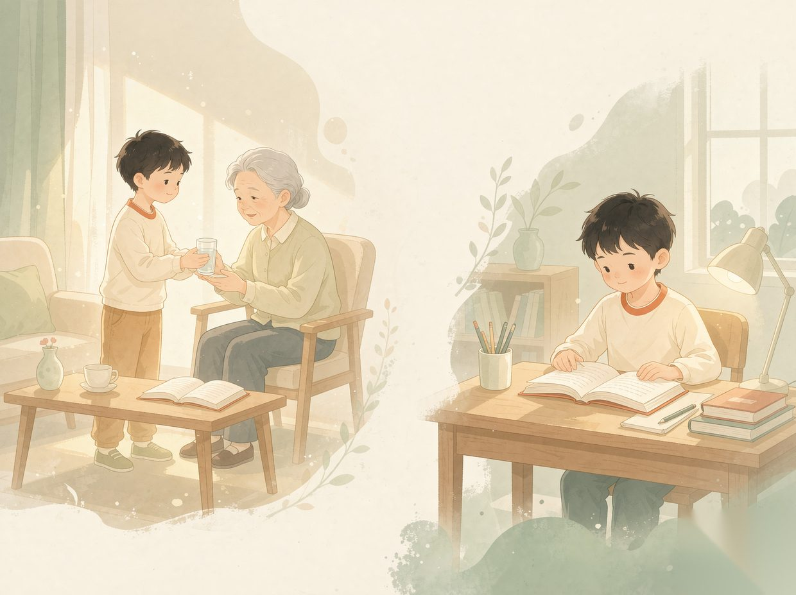

首孝悌，次见闻
前面我们把孝、悌两条人伦根基学完：孝敬父母，恭顺兄长前辈。这一句，给出学习的先后次序。
第一优先修好孝悌的本心，然后再去广博地见识、学习各种知识学问。
这里非常容易读偏，一定要读懂：不是不要读书、不要学知识。
它讲的是根基先后。如果一个人读了很多书，懂得很多道理，却没有体恤亲人、善待他人的心，学识就容易变成炫耀、算计的工具。
孝悌，就是稳住内心的底色；底色站稳之后，再去多看、多听、多学，所学的知识才会用来善待自己、善待旁人。

这也呼应我们一直讲的：本心良知如同璞玉，孝悌就是最先打磨出来的温润质地；见闻学识，是后面用来开阔这块玉的格局。
不是二者二选一，是有先后。先学会做人的分寸，再扩充见识。

知识本身没有善恶，要看持守知识的人，本心如何。
学识不少，却自私冷漠、恃才傲物；把知识当成攀比、压倒别人的资本。
心中存敬存体恤，再去广学见闻；用学识涵养本心，助人利他。
- 学习有次序：先养善良宽厚的心，再学各样知识。
- 知识本身没有善恶，要看持守知识的人，本心如何。
- 孝悌是根基，见闻是枝叶；根基稳固，枝叶才能长久繁茂。
- 读书求知，最终是为了更好地明白事理、温柔待人。
「首」「次」两个字，最容易被读成偏废。三条提示，守住平衡。
一、次序不等于偏重偏废。不是德行做好了才可以读书，而是同步养育、价值优先级不同。日常一边陪伴修习人伦，一边读书拓展见闻。
二、警惕两种极端。只抓成绩学识，忽略共情与德行；或者空谈德行，排斥知识学习。
三、承接教与学的二分。家长以身示范孝悌、建立稳定家风，属施教一侧；孩子自主体会仁爱、主动求学，属学习者的修习。
接上选择力练习：宽厚敬爱的底色不变，见闻的方向与兴趣，可以尊重孩子自主选择。
首孝悌，次见闻
一 · 字义与句读首，先也；次，后也。见闻，目之所见、耳之所闻，泛指外求之学、经史博物、世间知识。全句：修习的次序，以孝悌仁德为首要根基，而后再广求见闻、博览学识。
这是前面孝悌一系列故事之后的总收束，把人伦实践与求知之学划分次第。
二 · 命题考辨勘误重点：后世常曲解为「德行最重要，读书不重要」，或变成重德轻智、排斥求知。
儒家的本意是本末之辨，不是有无之辨。孝悌为「本」，见闻为「末」；有本有末，才是完整的人。
《论语·学而》：「弟子入则孝，出则悌，谨而信，泛爱众，而亲仁。行有余力，则以学文。」正是本句源头，一脉相承。
换言之：人伦本分践行妥当之后，有余力再研习文典学识。不是不许学文，是不可以舍本逐末。
三 · 中西对照儒家：仁为本，学为用；德性先立，知识后广。
亚里士多德：实践德性优先于纯粹思辨，良好品格是一切理智活动的前提。
现代教育理论：品格素养是底层基座，认知学习建立在安全、共情的人格基础之上。
反向思辨：「先德后学」的次序容易被用来压制求知，也容易把孝悌教条化，用伦理束缚探索精神。德性是活的共情，不是禁锢求知的枷锁。
四 · 与前后课的张力链条收拢到学习总纲：为人子 → 亲师友；香九龄（孝之行）→ 孝于亲（守孝之本）；融四岁（悌之行）→ 弟于长（立悌之纲）→ 首孝悌，次见闻（确立本末次序）。
呼应第十三课「人不学，不知义」：孝悌就是义最根本的落地；见闻，是向外延伸，去认识更大世界里的义理。
呼应第十二课「玉不琢，不成器」：孝悌打磨玉质，见闻雕琢器用；质地纯净，器才可贵。
呼应第四课「教之道，贵以专」：稳定的教化先护持仁德本心，再引导向外求知，次序不乱。
一、如果一个孩子天资聪颖、求知欲极强，但共情与人伦功课滞后，如何平衡引导？
二、本末的次序，是人生早年的安排，还是终身都要遵守的准则？
三、现代分科教育体系之下，如何落实「首孝悌，次见闻」，而不与通识教育冲突？